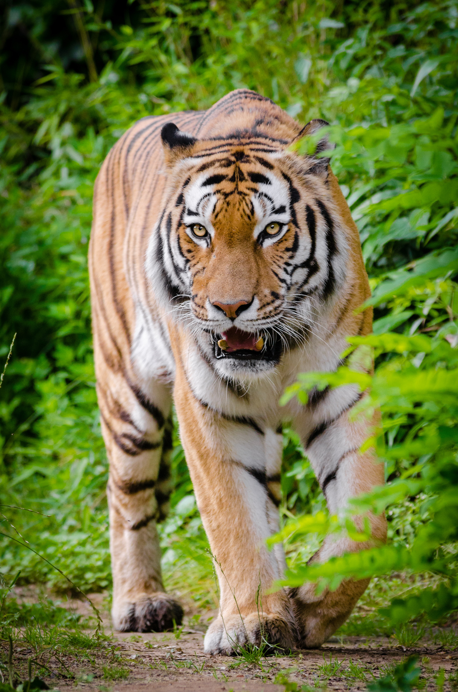

The tiger is a unique animal which plays a pivotal role in the health and diversity of an ecosystem. It is a top predator which is at the apex of the food chain and keeps the population of wild ungulates in check, thereby maintaining the balance between herbivores and the vegetation upon which they feed.

Therefore, the presence of tigers in the forest is an indicator of the well being of the ecosystem. The extinction of this top predator is an indication that its ecosystem is not sufficiently protected, and neither would it exist for long thereafter.

when a species goes extinct, it leaves behind a scar, which affects the entire ecosystem. Another reason why we need to save the tiger is that our forests are water catchment areas.